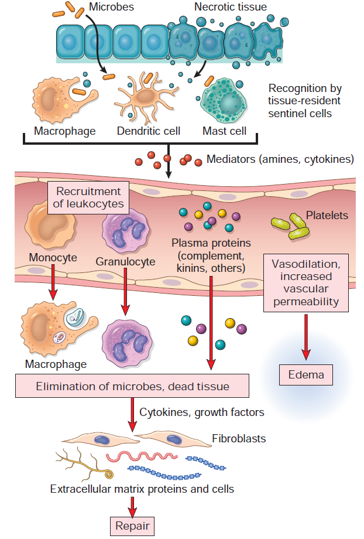
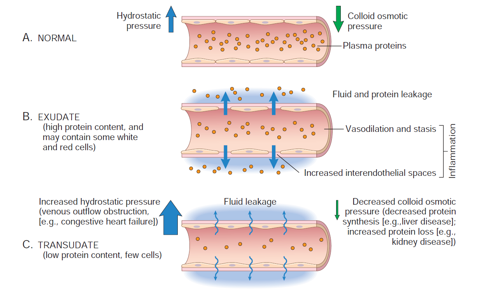

General Overview¶
Inflammation is a response of vascularized tissue that delivers leukocytes and molecules of host defense from circulation to sites of infection and cell damage to eliminate the offending agents.
Suffix -itis after an organ denotes inflammation - appendicitis, conjunctivitis, meningitis, etc. 
Typical Inflammatory Reaction Steps:¶
- Recognition
- Cells of inflammation have receptors which identify microbial products and substances released from damaged cells.
- Receptor activation -> release of inflammation mediators.
- Recruitment
- Coordinated changes in blood vessels and mediator secretion.
- Leukocytes and proteins (complement) move to site of injury.
- Removal
- Phagocytic cells ingest and destroy offending agents.
- Regulation of response (and termination)
- Repair
- Tissue repair
Causes¶
- Infection and microbial toxins
- Tissue necrosis
- Foreign bodies (splinters, dirt, suture), even a few endogenous molecules.
- Urate crystals - gout
- Cholesterol - atherosclerosis
- Lipids - obesity associated metabolic syndrome
- Immune reactions (hypersensitivity)
Recognition of Microbes and Damaged Cells¶
Initiating step in inflammatory response - Cellular receptors for microbes - Receptors expressed in plasma membranes (extracellular microbes), endosomes (ingested microbes), cytosol (intracellular microbes). - Best defined - [[Toll-like receptors (TLRs)]] - Sensors of cell damage - NOD-like receptors (NLRs) - Other cellular receptors - Fc tails of antibodies - Complement proteins - Circulating proteins - Complement system - Mannose-binding lectin - recognizes microbial sugars - Promotes ingestion of microbes. - Activation of complement system. - Collectin proteins - bind to and combat microbes
Acute Inflammation¶
3 major components: 1. Dilation of small vessels -> increase in blood flow. 2. Increased permeability of microvasculature -> plasma proteins and leukocytes leave circulation. 3. Emigration of leukocytes from microcirculation -> accumulation in focus of injury -> activation to eliminate offending agent.
Reactions of Blood Vessels¶
Maximize movement of plasma proteins and leukocytes out of circulation into focus of injury
Exudation - escape of fluid, proteins, and blood cells from vasculature into interstitial tissue or body cavities. Exudate - extravascular fluid with high protein concentration and cellular debris. - Presence implies inflammatory process resulting in increased vascular permeability. Transudate - extravascular fluid with low protein content, little to no cellular debris and low specific gravity. - Ultrafiltrate of blood plasma. - Result of osmotic/hydrostatic imbalance without changes in permeability. Edema- accumulation of excess fluid in interstitial tissue or serous cavity (either exudate or transudate). Pus - purulent inflammatory exudate, rich in leukocytes (mostly neutrophils), dead cell debris, and often microbes. 
1. Changes in vascular flow and caliber¶
- Vasodilation, induced by mediators, especially histamine on vascular smooth muscle.
- Earliest manifestation of acute inflammation.
- Opening of new capillary beds in the area -> increased blood flow -> heat and redness (erythema) at site of inflammation.
- Vasodilation followed by #2. Increased vascular permeability.
- Loss of fluid and increased vessel diameter.
- Slower blood flow, concentration of RBCs in small vessels, and increased viscosity of blood.
- Engorgement of small vessels with slow moving RBCs called stasis.
- As stasis develops, blood leukocytes (mainly neutrophils) accumulate along vascular endothelium.
2. Increased vascular permeability¶
- Contraction of endothelial cells -> opening of inter-endothelial gaps.
- Histamine, bradykinin, leukotrienes, other mediators.
- Immediate transient response - occurs rapidly after exposure and usually short lived.
- Endothelial injury -> endothelial necrosis and detachment.
- Neutrophils adhering to endothelium during inflammation may damage them and amplify response.
- Sustained for several hours until damaged vessels are thrombosed or repaired.
3. Responses of lymphatic vessels and lymph nodes¶
- Lymph flow increased to help drain edema fluid accumulation due to increased permeability.
- Vessels proliferate to handle increased load.
- Secondary inflammation
- Lymphangitis - lymphatics
- Presence of red streaks (inflamed lymphatics, diagnostic of lymphangitis) near skin wound indicate bacterial infection.
- Lymphadenitis - draining lymph nodes
- Often enlarged due to hyperplasia of follicles and increased lymphocytes/macrophages. Collection of pathologic changes -> reactive, or inflammatory, lymphadenitis.
- Lymphangitis - lymphatics
Leukocyte Recruitment to Site of Inflammation¶
Journey of leukocytes from vessel lumen to tissue is a multistep process mediated and controlled by adhesion molecules and cytokines called chemokines.
Most important leukocytes -> capable of phagocytosis -> neutrophils and macrophages.
1. Leukocyte adhesion to endothelium¶
Margination - process of leukocyte redistribution, where the cells assume a peripheral position due to dilation of inflamed postcapillary venules and stasis (slow blood flow). Attachment of leukocytes to endothelial cells is mediated by adhesion molecules whose expression is enhanced by cytokines. - Secreted by sentinel cells in response to microbes/injurious agents. - Selectins - mediate initial rolling action. - Expressed on leukocytes (L-selectin), endothelium (E-selectin), platelets and endothelium (P-selectin). - Expression of selectins and their ligands mediated by cytokines. - TNF and IL-1 -> endothelial cells of postcapillary venules. - Expression of E-selectin and ligands for L-selectin. - Histamine and thrombin -> P-selectin from intracellular storage onto surface. - Weibel-Palade bodies - endothelial cell granules containing P-selectin. - Low-affinity binding -> leukocytes bind, detach, and bind, causing them to roll along the endothelial surface. - Integrins - heterodimeric leukocyte surface proteins, mediate firm adhesion. - TNF and IL-1 -> endothelial expression of integrin ligands. - VCAM-1 (vascular cell adhesion molecule) -> beta-1 integrin VLA-4. - ICAM-1 (intercellular adhesion molecule) -> beta-2 integrins LFA-1 and MAC-1. - Chemokines bind to and activate leukocytes. - Conversion of VLA-4 and LFA-1 to high-affinity state.
2. Leukocyte migration through endothelium¶
Migration of leukocytes through intact endothelium called transmigration or diapedesis, mainly in postcapillary venules. - Adhesion molecules present in intercellular junctions between endothelial cells. - CD31 or PECAM-1 (platelet endothelial cell adhesion molecule). - Help them transverse endothelium. - Leukocytes pierce the basement membrane by secreting collagenases. Genetic deficiencies in adhesion molecules result in increased susceptibility to bacterial infections.
3. Chemotaxis of leukocytes¶
Movement of leukocytes in tissues towards the site of injury, mediated through chemokines, along their concentration gradient. - Chemotactic substances - Exogenous - Bacterial peptides with N-formyl methionine terminal and lipids. - Endogenous - Cytokines - IL-8 - Complement system - C5a - Arachidonic acid metabolites - leukotriene B4 (LTB4) - Bind G protein -> actin polymerization + myosin localization -> cytoskeleton rearrangement -> movement through filopodia. - Nature of leukocyte infiltrate: - Neutrophils respond first, undergo apoptosis first too. - Monocytes survive longer, may also proliferate within tissue. - Exceptions - Pseudomonas - continuously recruited neutrophils. - Viral infections - lymphocytes arrive first. - Hypersensitivity - lymphocytes, macrophages, plasma cells. - Helminthic/allergic - eosinophils.